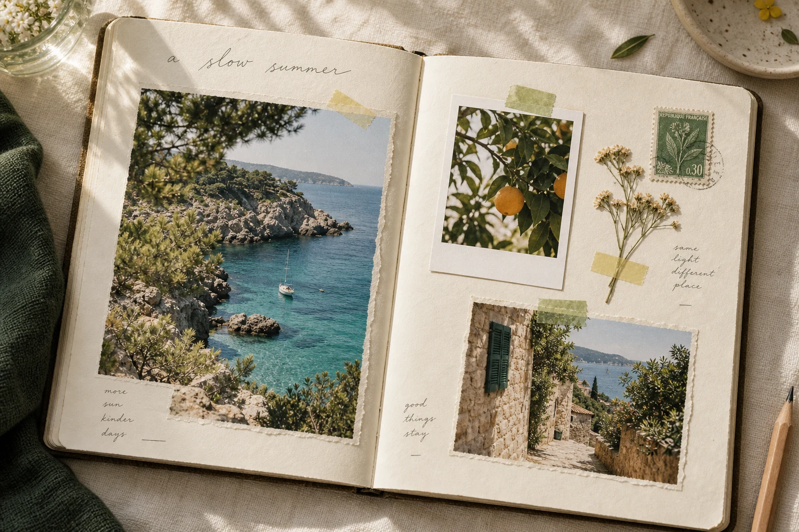
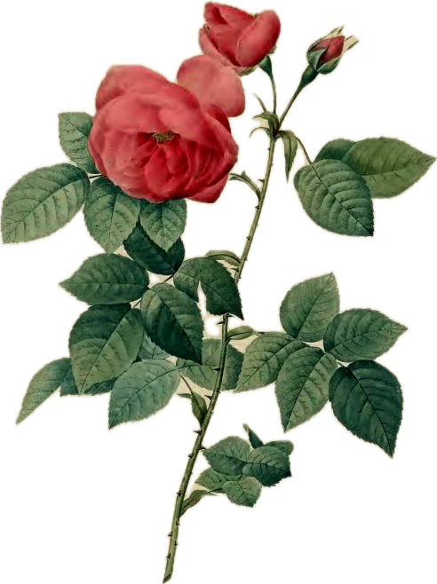
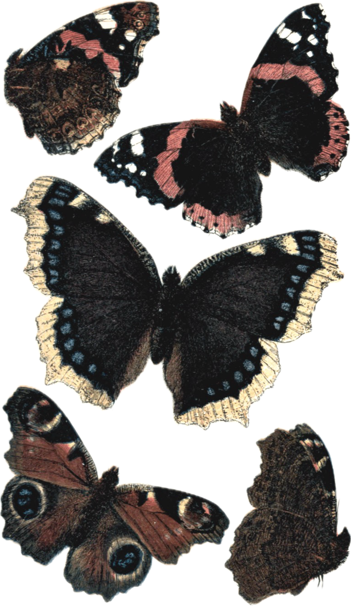
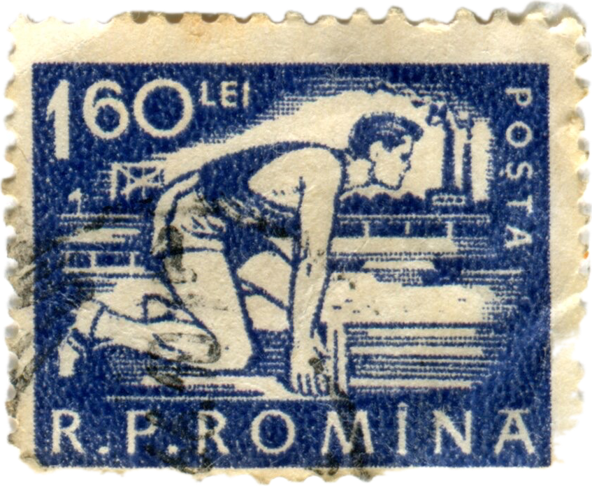

留在自己的电脑里
手帐与照片保存在本机。打开拾光，按自己的节奏记录、整理和翻阅。

平凡的小事，
也想好好留住。
01 — 像做一本真正的手帐
保留纸张的层次，也有数字工具的自在。
从一段文字开始，或先贴上今天最喜欢的照片。
文字、照片、贴纸各自独立。拖动、旋转、叠放，把喜欢的东西摆在喜欢的位置。
也可以请 AI 帮忙排版，
预览后，再决定是否应用。
在街角买了一束花，
回家时绕了远路。
风刚刚好，
今天也没什么大事。

02
little moments留一点空白，
等下次想起什么再写。

导入图片 → 裁出喜欢的部分 → 收进素材库
风开始变得轻一点。
慢慢走，慢慢记。
封面开合示意 · 在 App 中体验完整 3D 翻页
字，也有自己的笔迹。手写字体，让几句心情有温度。
纸，可以再多一层。底纸、边框、硫酸纸，慢慢叠出层次。
做好的，值得再翻翻。按页浏览，也能导出高清图片。
02 — 这是你的私人角落
手帐与照片保存在本机。打开拾光，按自己的节奏记录、整理和翻阅。
编辑时自动保存，误操作可以撤销。历史备份支持恢复为副本，保留已有手帐。
完整备份可以带上笔记、照片与素材。换电脑时导入，继续收藏新的日子。
AI 为可选功能。启用时，相关文字或图片会发送到你配置的模型服务；也可以直接使用本地排版。
从今天的一件小事开始
打开电脑，选一张照片。剩下的，慢慢来。
拾光在电脑上使用，支持 Mac 与 Windows。
已在本机启动？直接打开手帐；首次使用请先查看安装说明。
不需要。可以手动添加文字、照片和素材，也可以使用本地排版。想使用 AI 排版或整理内容时，再在 App 设置中填写模型服务信息。
这张介绍页可以在手机上浏览。拾光 App 当前面向 Mac 与 Windows 电脑，请在电脑上安装和使用。
编辑会自动保存在本机。建议定期在 App 左侧的“备份”中导出完整资料，另存到安全的位置；恢复备份时，资料作为副本加入已有内容。